Psicólogo Vegano
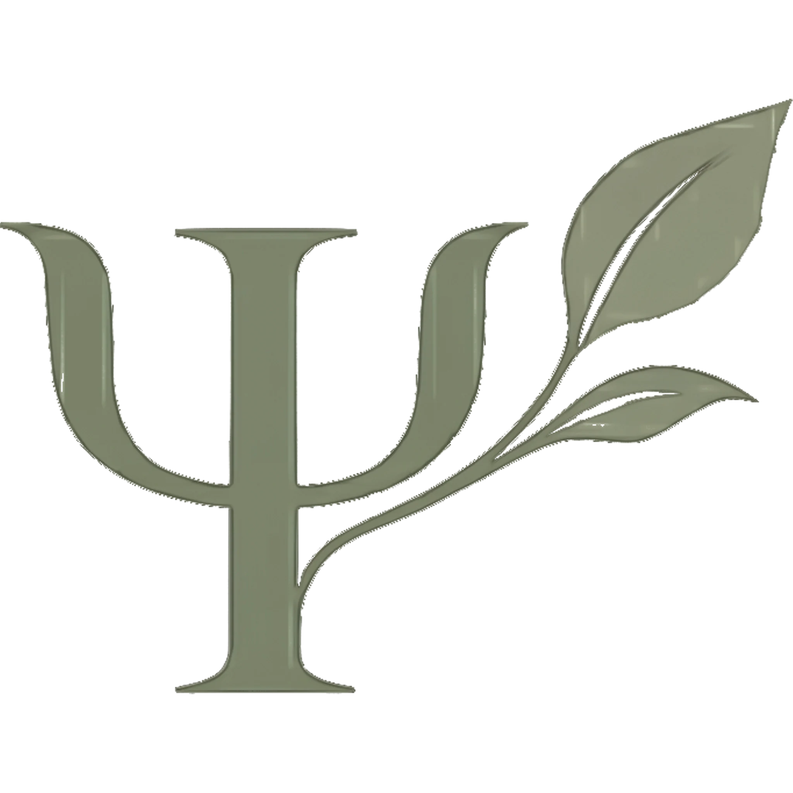
Psicologo clinico especialista en veganismo
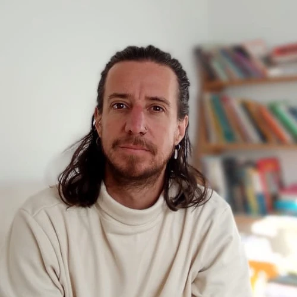
“Pocos psicólogos comprenden lo que implica vivir sintiendo el sufrimiento animal en un mundo que lo normaliza.”
Qué nos pasa psíquicamente
al ser veganos
en un mundo que no lo es
Elegir no participar de la explotación transforma tu forma de vivir, sentir y vincularte.
Y eso tiene un impacto emocional real.
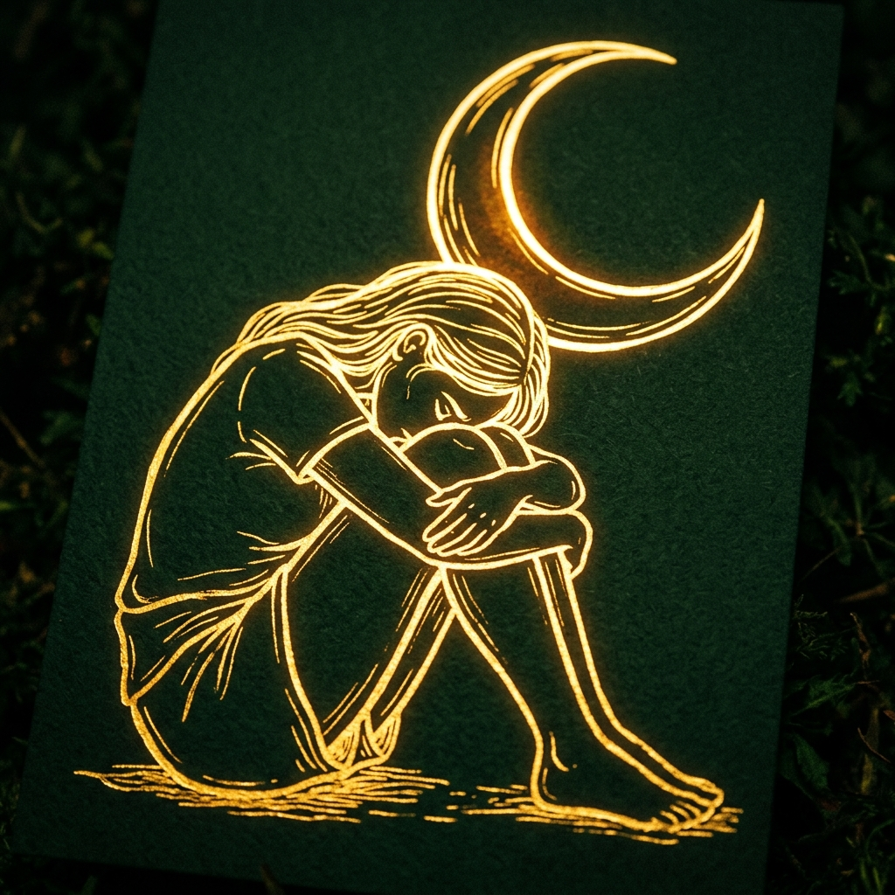
Aislamiento y desconexión
Sentís que tus valores te separan de los demás. Te cuesta encontrar lugares donde encajar.
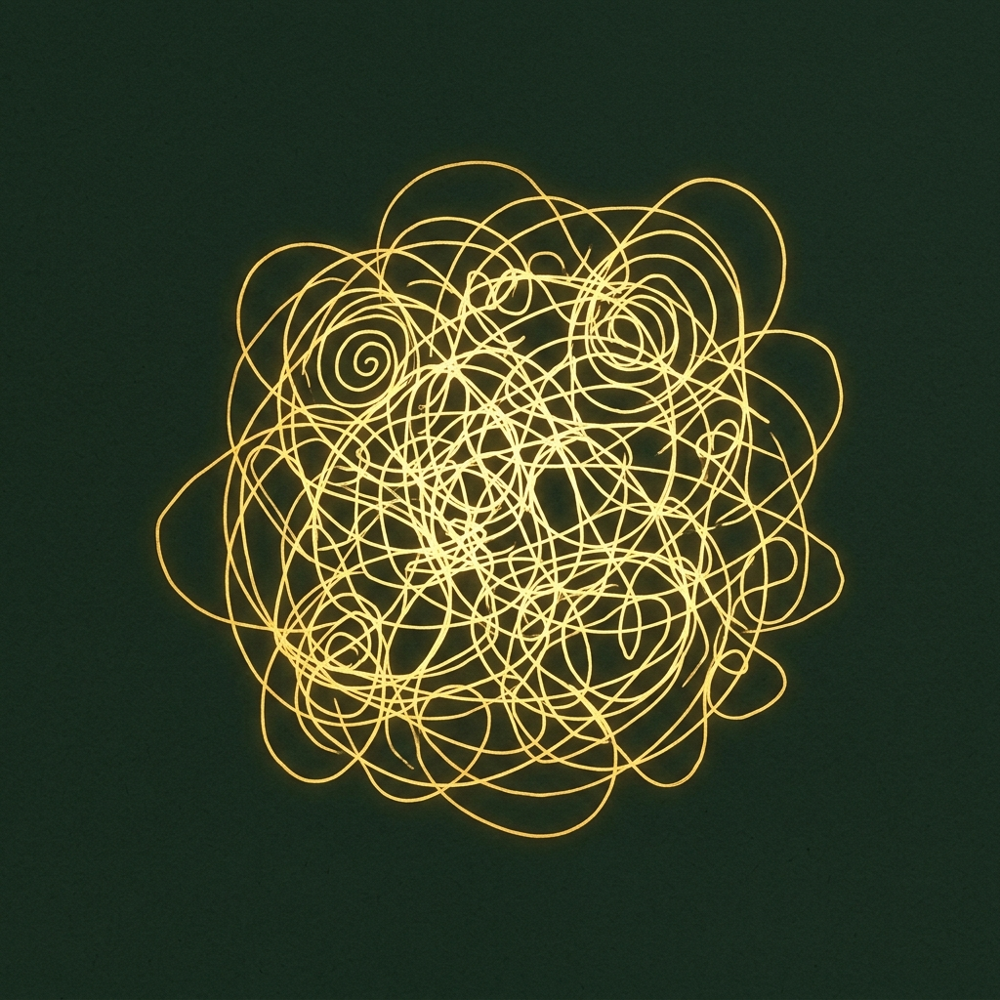
Sobrecarga emocional
La exposición constante a la violencia y al especismo genera tristeza, enojo, impotencia y agotamiento.
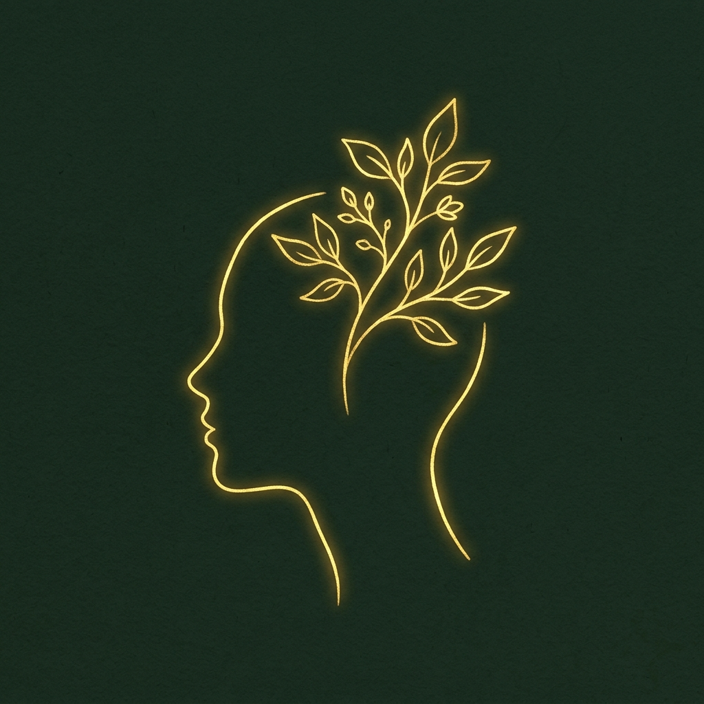
Culpa y exigencia permanente
La búsqueda de coherencia absoluta puede volverse una carga pesada de sostener.
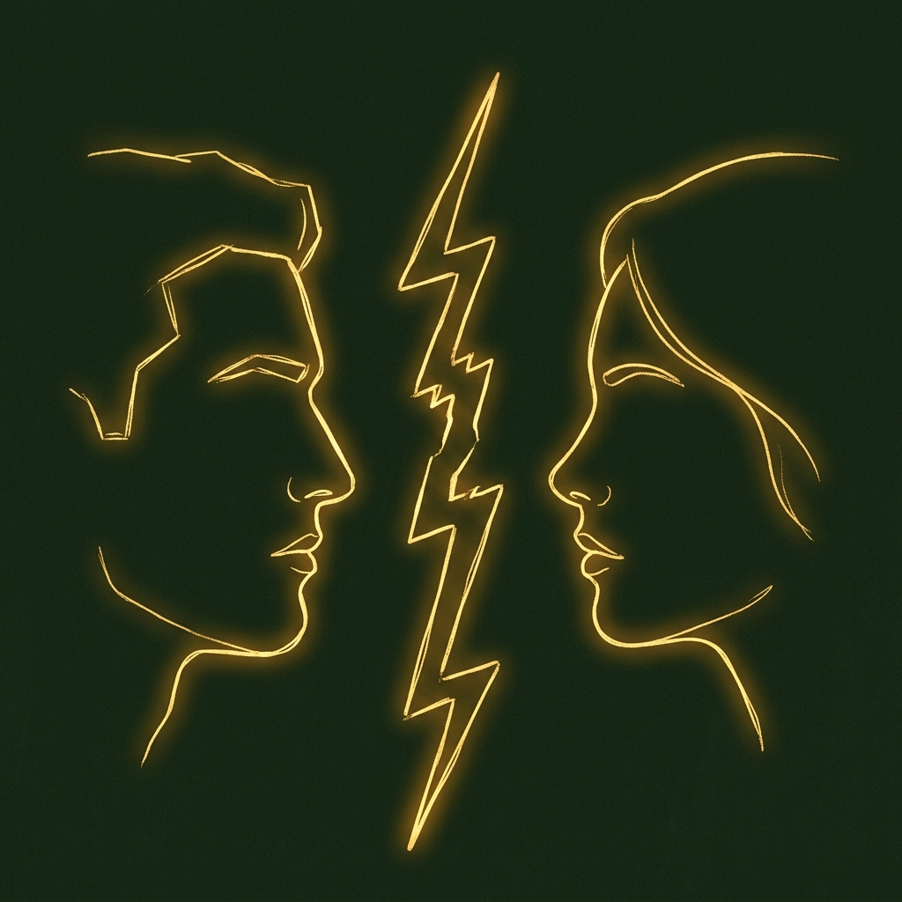
Conflictos vinculares
Diferencias de valores que generan tensión en la familia, en la pareja, en el trabajo y en las amistades.
Tu sensibilidad no es un problema, es tu brújula. Podemos trabajar juntxs para que deje de doler tanto.
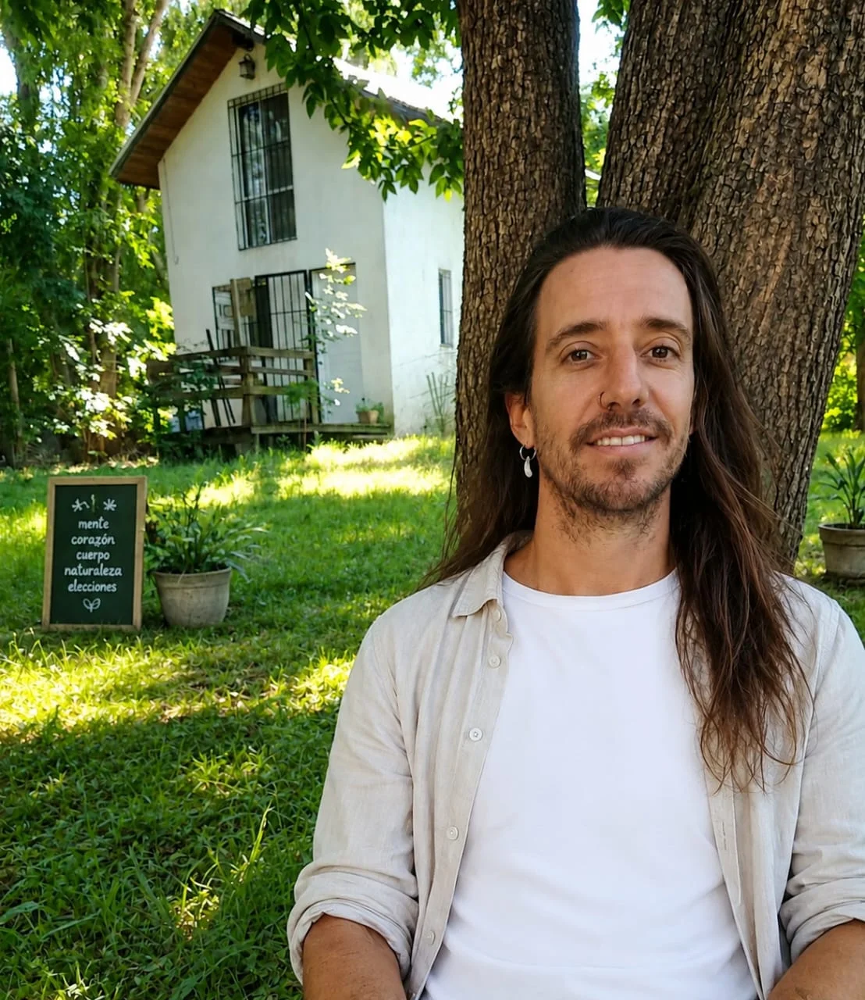
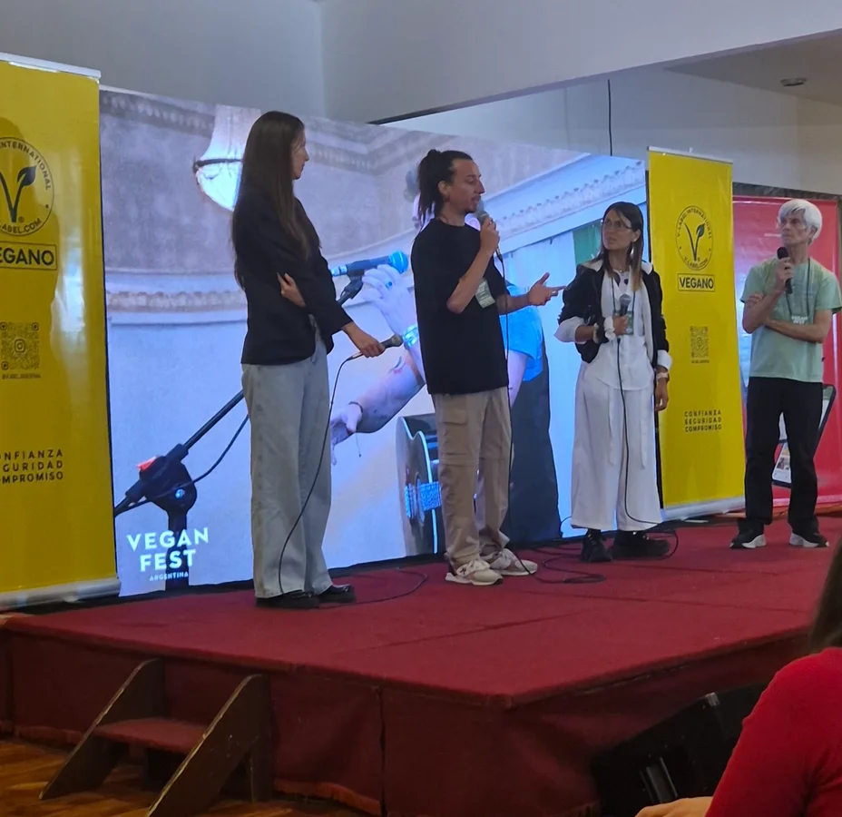
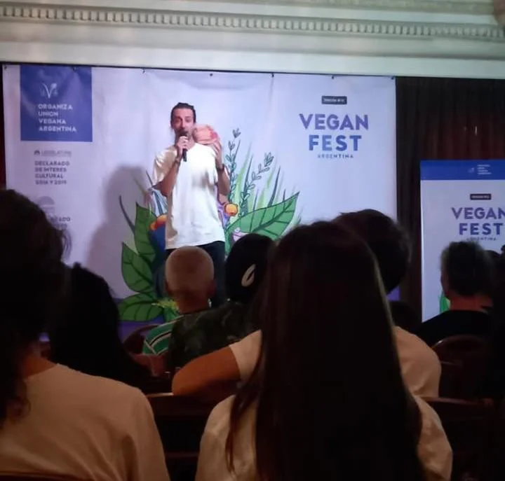
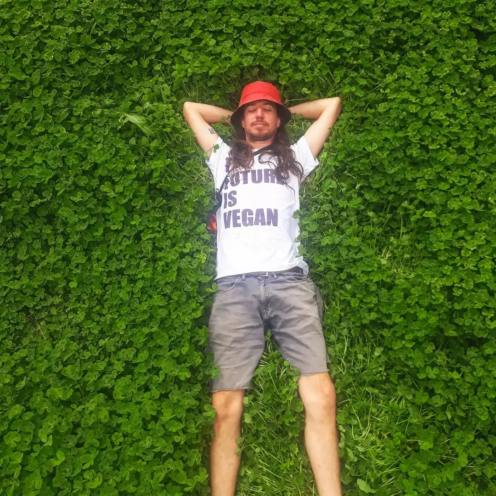
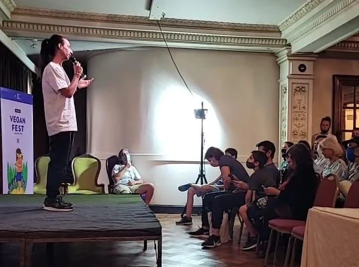
Acompañamiento especializado
Lic. Mauro García Rodriguez
Soy psicólogo clínico especializado en acompañar a personas veganas y sensibles al sufrimiento animal. Trabajo con quienes eligen no anestesiarse, para que puedan sostener su sensibilidad sin que eso se convierta en angustia, bronca o agotamiento.
Mi camino no es solo teórico. Después de años en la ciudad, elegí salir de esa lógica y radicarme en Entre Ríos, donde desarrollo un espacio de encuentros terapéuticos en la naturaleza que acompañan y profundizan el proceso clínico.

Coautor de "Acerca de la corporalidad"
Capítulo: Cuerpos no humanos
Un análisis sobre el narcisismo, la empatía y el antropocentrismo en el vínculo con los animales.
Sesión de orientación
Una entrevista psicologica para ordenar lo que te está pasando y encontrar herramientas concretas frente al malestar derivado de habitar nuestra realidad actual desde el veganismo.
Propuestas terapéuticas
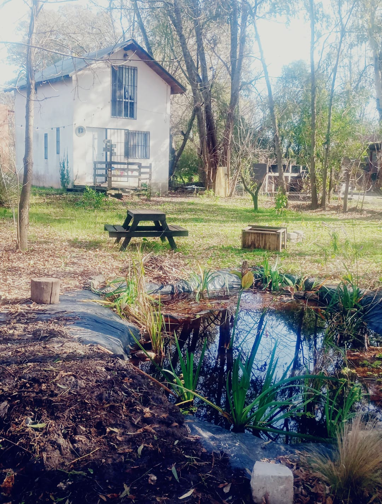
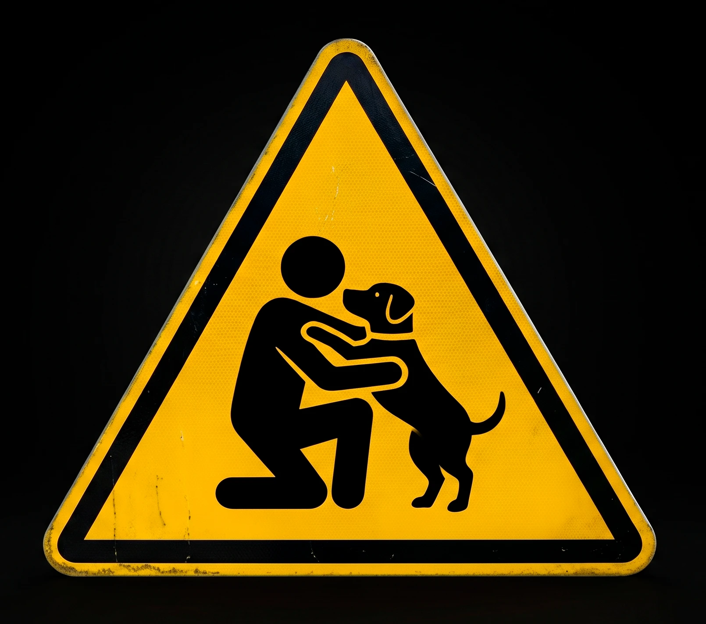
¿Tenés familia multiespecie?
Cuidar el vínculo con los animales de nuestra familia también implica proteger sus derechos y nuestra tranquilidad. Un Certificado de Apoyo Emocional les permite convivir y trasladarse juntos sin barreras.
Podés obtener un certificado profesional para facilitar:
Casos clínicos / consultas
Encuentros, testimonios y lecturas del espacio clínico de forma integrada.
Reflexiones escritas
Voces del espacio
Atención psicológica especializada para personas hispanohablantes en el exterior.
Medios de pago: Paypal · Western Union · Criptomonedas
Ponete en contacto
Preguntas frecuentes
Dudas comunes sobre la modalidad, los servicios y el espacio terapéutico.